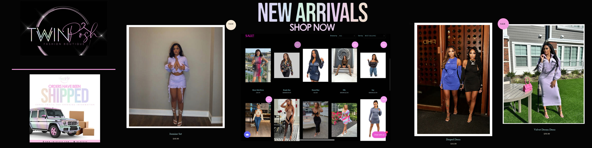
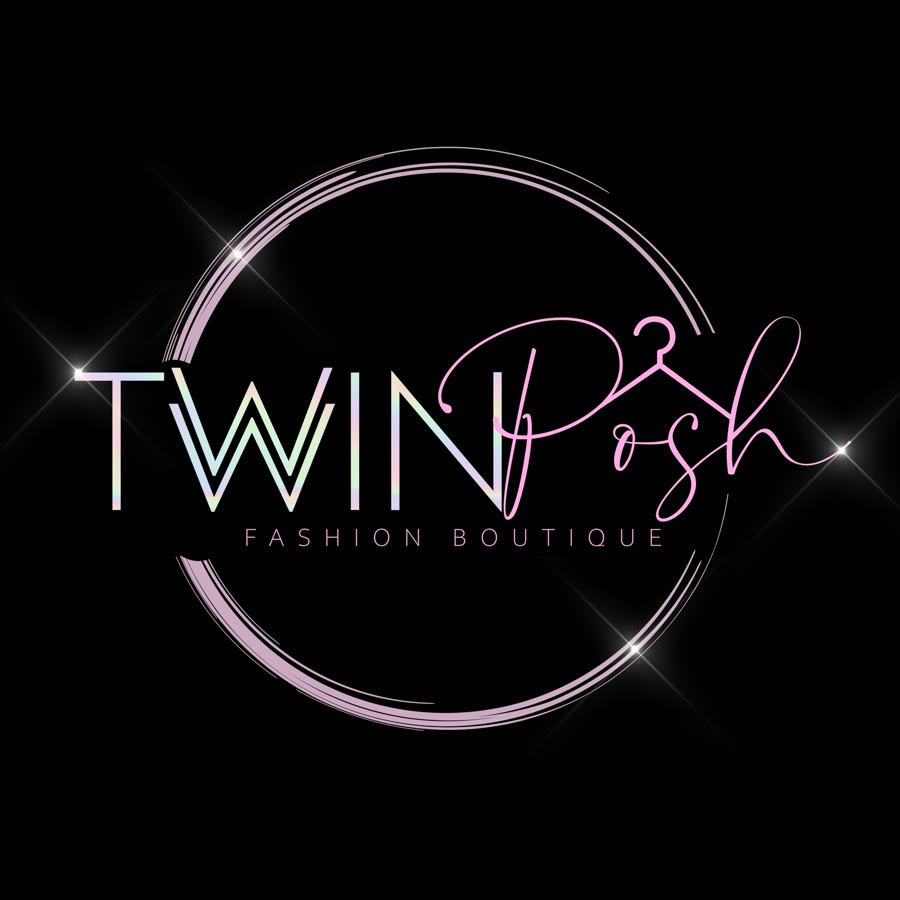
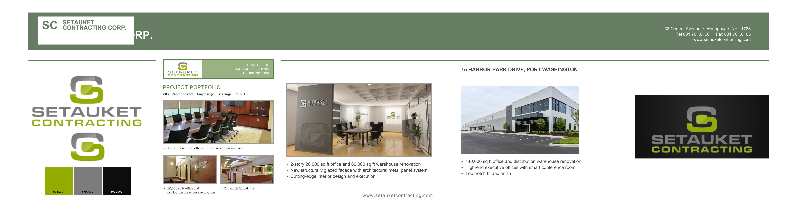

Twin Posh: New Arrivals
Social banner for a fashion boutique's new drop, with product photos and a shop-now call to action.
Brand banners, a motion piece, and print-ready layouts. Built to stop the scroll and make the next click obvious.

Social banner for a fashion boutique's new drop, with product photos and a shop-now call to action.

Brand mark used across the boutique's storefront and social channels.
A short looping banner promoting game-day viewing, with bar photos and the Prato 850 wordmark.
One-page commercial construction update with project highlights for Bearings Limited and Jesco Lighting.

Redesigned project page using the company's green and grey palette, with the Harbor Park Drive portfolio.
Work shown with permission from each client.